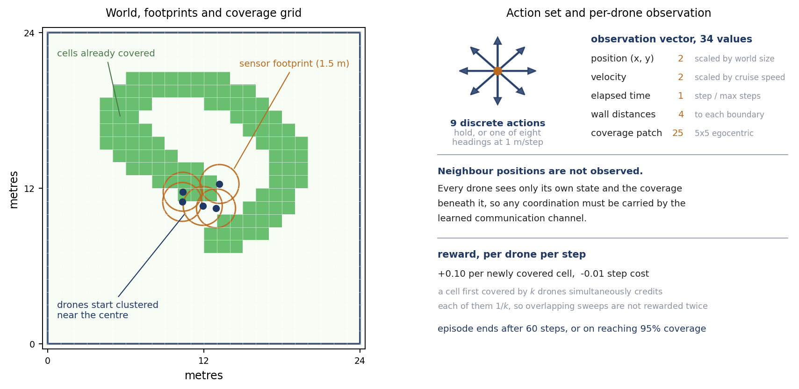
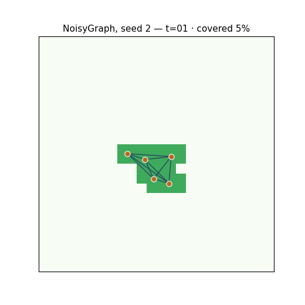
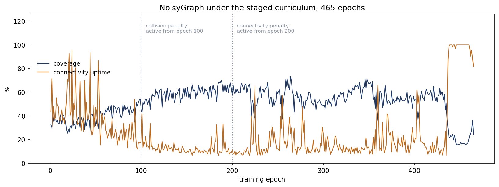
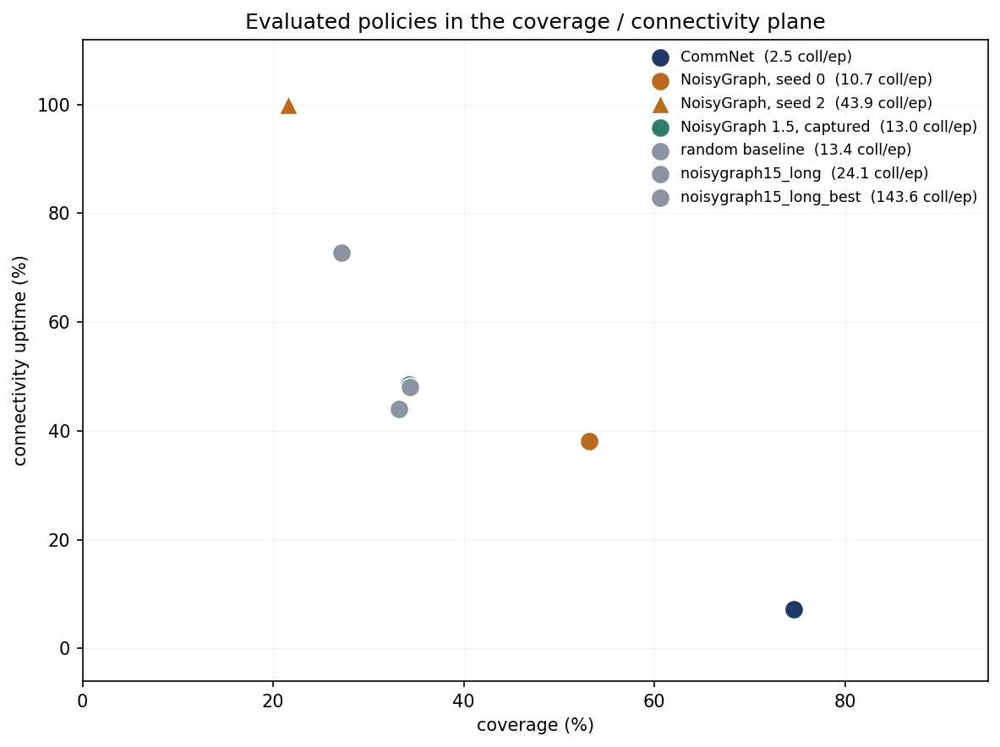
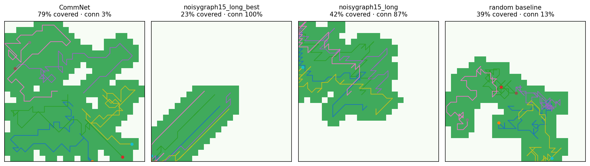

Ongoing research project · Phases 0, 1, and 1.5 complete (7 planned)
UAV Emergent-Communication Swarm
An empirical investigation into whether learned multi-agent emergent communication architectures generalise to unconstrained spatial environments. This project extends the NoisyGraph framework to an autonomous unmanned aerial vehicle (UAV) swarm executing area coverage under dynamic, agent-maintained network topologies.
Research Motivation
My doctoral thesis introduced NoisyGraph, a graph neural network framework designed to maintain multi-agent coordination under communication channel degradation. While originally validated on connected autonomous vehicles navigating unsignalised intersections, the underlying theoretical architecture was designed to be environment-agnostic.
This project empirically evaluates that domain-generalisation claim in a spatial environment with fundamentally different constraints. A swarm of autonomous drones must coordinate to cover unknown terrain without centralised infrastructure or pre-defined communication topologies. Agents move freely in continuous space, causing the communication graph to dynamically fragment and re-form based on proximity. The research is conducted in modular phases to systematically isolate architectural performance, multi-objective trade-offs, and training dynamics.
Environment & Task Formulation
The benchmark task evaluates five UAV agents initialised in a central cluster within a continuous bounded plane over a 60-timestep horizon. The objective formulation introduces fundamental tension across three optimisation targets:
Maximising area coverage requires spatial agent dispersal; maintaining network connectivity requires agents to remain within a communication radius; and spatial proximity introduces collision risks. Because no spatial configuration can simultaneously maximise all three objectives, the policy must discover an optimal Pareto trade-off.
To rigorously evaluate emergent communication, individual agents operate under partial observability: each agent receives only its local kinematics (position, velocity, boundary distance) and a localised spatial grid patch beneath its sensor payload. Global teammate locations are strictly withheld, forcing spatial awareness to emerge entirely via learned message passing across the communication network.

Two communication paradigms are benchmarked: CommNet, a broadcast architecture relying on global average message pooling, and NoisyGraph, which constructs dynamic spatial adjacency graphs at each timestep and routes representations via graph attention across variable-depth relay chains.
Phase 1: Baseline Architecture Benchmarking
The NoisyGraph prototype was evaluated across four independent training runs with identical hyperparameter configurations, varying only the random seed initialisation. Three of the four seeds converged to a local optimum characterised by policy collapse: agents remained tightly clustered near the origin, preserving 100% network connectivity but restricting spatial coverage to 21%–35%. Only a single seed successfully learned a dispersed strategy, achieving 53.2% area coverage.

Averaged across seeds, NoisyGraph achieved 35.1% mean coverage compared to 33.2% for a random policy baseline (), while exhibiting higher collision frequencies in 75% of runs. These initial results indicated that the unadjusted prototype failed to reliably outperform random action selection.
Crucially, empirical reward analysis revealed that clustered policies earned significantly lower cumulative returns ( to per episode) than the dispersed policy ( to ). This gradient trajectory demonstrates that clustering was not an intentional Pareto choice endorsed by the reward function, but rather an optimisation pathology where policy updates became trapped in sub-optimal local minima.
Phase 1.5: Policy Optimisation Dynamics & Stability
Two primary hypotheses were framed to explain the clustering failure mode: local collision penalty avoidance driving policies toward static, low-risk trajectories, or temporal credit assignment failure where immediate proximity penalties dominated delayed exploration rewards.
Incorporating entropy regularisation and reward normalisation enabled the swarm to discover spatial dispersal without a curriculum, attaining 59.0% area coverage by epoch 73 with under 4 collisions per episode. However, subsequent policy iterations suffered catastrophic collapse, reverting entirely to clustered configurations by epoch 101. This established that the primary optimisation challenge was not exploration efficiency, but policy update stability within the multi-agent optimisation landscape.
To mitigate gradient instability, a staged reward curriculum was introduced: training exclusively on spatial coverage for 100 epochs, introducing collision penalties at epoch 100, and enforcing connectivity penalties at epoch 200. This curriculum stabilized the dispersed configuration significantly, maintaining an average of 57.4% coverage and 8.7 collisions per episode across epochs 111–430 (peaking at 73.2% coverage). Late-stage policy collapse was deferred until epoch 440.

While the curriculum extended stability, diagnostic evaluation confirmed that the learned policy did not achieve a true multi-objective balance. At 57.4% coverage and 15.2% connectivity uptime, the swarm systematically accepted connectivity penalties to optimise exploration, mirroring the behaviour of the CommNet baseline rather than discovering a hybrid equilibrium.
Evaluation Metrics & Checkpoint Selection Pathologies
Due to transient policy stability, automated checkpoint selection criteria were implemented to retain optimal model weights during training. Evaluating candidate selection metrics revealed critical failure modes in standard multi-objective scalarisation.
Linear weighted summation criteria consistently selected trivial clustered policies, as static connectivity rewards outweighed early-stage coverage gains. Transitioning to a harmonic mean scalarisation, designed to heavily penalise single-objective neglect, mitigated trivial clustering but introduced severe variance sensitivity across short evaluation sampling windows (8 episodes/epoch).
| Checkpoint Epoch | Scalar Score | Training Performance | Post-Training Evaluation |
|---|---|---|---|
| Epoch 464 (Selected) | 0.4724 | 36.6% cov · 88.8% conn · 45.5 coll | 27.2% cov · 72.8% conn · 143.56 coll |
| Epoch 263 (Runner-Up) | 0.4657 | 61.8% cov · 39.0% conn · 12.1 coll | Not retained (Discarded) |
Epoch 263 represented the most balanced non-dominated policy identified in the project, outperforming all Phase 1 baseline seeds across coverage, connectivity, and collision metrics simultaneously. However, because single-epoch selection was subject to sampling variance, the metric selected Epoch 464—a checkpoint occurring mid-collapse. During post-training evaluation across 50 seeded evaluation episodes, Epoch 464 exhibited severe performance degradation, yielding 27.2% coverage and 143.56 collisions per episode.
Comparative Evaluation
All candidate policies were benchmarked across 50 seeded evaluation episodes under identical initialisations. Metrics report mean values and single-standard-deviation intervals.
| Architecture / Policy | Area Coverage | Connectivity Uptime | Collisions / Episode |
|---|---|---|---|
| CommNet (Phase 0 — Coverage Only) | 87.1% ± 4.0% | 20.6% | 18.22 |
| CommNet (Phase 1 — All Objectives) | 74.6% ± 4.2% | 7.3% | 2.50 |
| NoisyGraph (Strongest Seed) | 53.2% ± 5.9% | 38.2% | 10.70 |
| NoisyGraph (4-Seed Mean) | 35.1% | 83.9% | 46.50 |
| Staged Curriculum (Final Policy) | 34.4% ± 4.7% | 48.1% | 24.10 |
| Staged Curriculum (Selected Policy) | 27.2% ± 6.2% | 72.8% | 143.56 |
| Random Action Baseline | 33.2% ± 5.3% | 44.0% | 13.40 |


Diagnostic Findings & Next Steps
Empirical results from Phases 1 and 1.5 identify three structural challenges to be addressed in Phase 2:
First, unconstrained policy gradient updates induce catastrophic policy collapse, requiring trust-region optimisation constraints (e.g., PPO clip boundaries) to restrict step sizes. Second, scalarised reward signals cause credit assignment interference across conflicting goals, requiring value function decomposition to model separate per-objective critics. Third, single-epoch evaluation metrics overfit to sample noise and discard Pareto-dominant trajectories, requiring a Pareto-aware checkpoint selection mechanism evaluated over rolling Monte Carlo validation windows.
Research Roadmap
- Phase 0 (Complete): Kinematic environment formulation, discrete action space, CommNet baseline, single-objective coverage optimisation.
- Phase 1 (Complete): Multi-objective reward integration (connectivity and collision bounds), NoisyGraph porting with oracle state estimates, 4-seed benchmark suite.
- Phase 1.5 (Complete): Diagnostic analysis of clustering failure modes, staged curriculum design, optimisation stability and checkpoint evaluation study.
- Phase 2 (Active): Trust-region policy updates, per-objective value function decomposition, Pareto-aware validation selection, continuous velocity control.
- Phase 3 (Planned): Channel degradation integration (thesis noise primitives), decentralised topology estimation under latency and packet loss, battery constraints.
- Phase 4 (Planned): High-fidelity physics simulation integration via
gym-pybullet-droneswith vision-based state representations. - Phase 5 (Planned): Task generalisation: dynamic target tracking and search-and-rescue extensions.